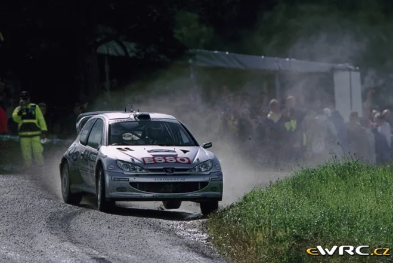
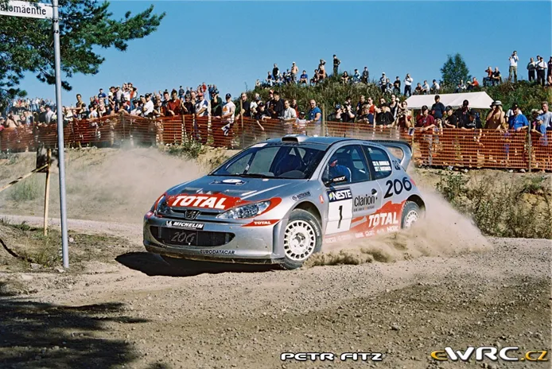
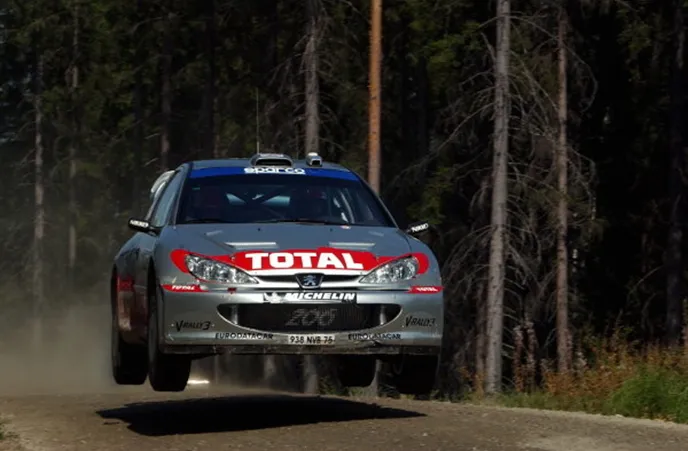
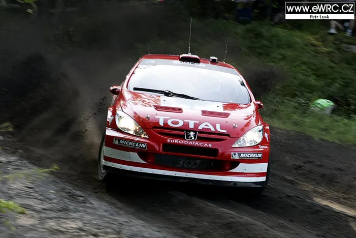
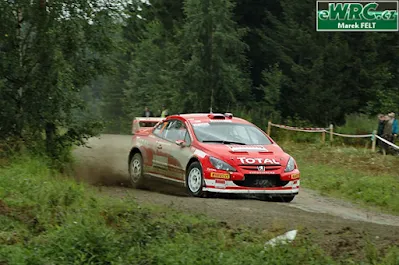
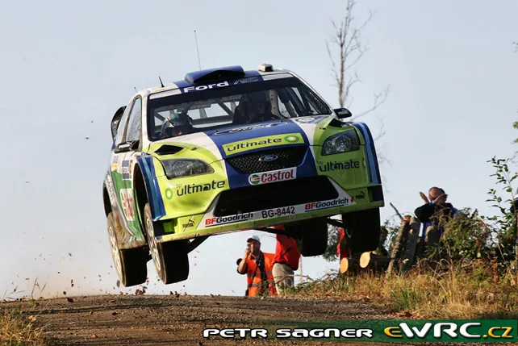
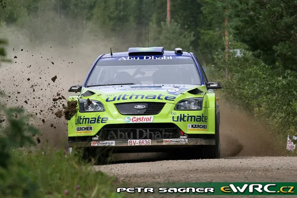

Marcus Gronholm's 7 Rally Finland Wins: A Retrospect
Rally Finland is for many the highlight of the WRC season. It is the rally where we get to witness rally cars go flat out for about 300km, and the one who comes out on top can certainly claim that he is the bravest driver in the championship. Not many non-Scandinavians have won in Finland, in fact only 8 non-Scandinavian drivers have won in Finland in the 70+ years this rally has been ran. The driver, or drivers I should say, that share the most wins in the rally that was formerly known as the 1000 Lakes Rally, are Hannu Mikkola and Marcus Gronholm, who both have 7 wins. The king of Ouninpohja was way before my time, so for our Rally Finland blog-post, I thought it would be a good idea to have a retrospective on Marcus Gronholm’s 7 wins in Jyvaskyla. So without further ado, lets head back in time, to the 2000s
1. Rally Finland 2000 – Peugeot 206 WRC
Picture from eWRC-Results
2000 was Marcus’ first full season in the WRC, and incredibly he won his first title. Bosse, got his first WRC win in Sweden that year, and his second in New Zealand, the rally before Finland. Heading to Finland, the Finn was 2nd in the standings, just 4 points behind Richard Burns who had not finished in New Zealand. So, Finland was the perfect chance for Gronholm to make a statement to the rallying world, that he was there to win the title, and what place to do it, than an event you know really well. (Gronholm had been doing the 1000 Lakes since 1989). And to put it simply, he dominated. Gronholm led from start to finish to get his first win at home. His closest challenge for the win, was championship rival Richard Burns, who crashed out after the finish on stage 11 (the gap was only 9.7s between the two). Gronholm beat McRae by over a minute, and won 12/23 stages, and with it, went to the top of the Drivers Standings. A position that he wouldn’t relinquish for the rest of the season, winning his first title in Australia.
2. Rally Finland 2001 – Peugeot 206 WRC

Picture from eWRC-Results
Things were quite different for Gronholm heading in to Rally Finland in 2001. Unlike 2000, the Finn was winless this season, with only one podium to his name, curtesy of his 3rd place in the hellish Rally Portugal. In fact, that was the only finish Gronholm had next to his name heading to Finland ! He suffered many mechanical problems with the 206, and was virtually out of the title fight. If the Finn wanted to have any chance of retaining the number one next to his name in 2002, Finland was a must win rally for him. And that’s exactly what he set out to do, winning 4 out of the first 7 stages and leading the rally ahead of Burns. He then “had 2 punctures” (didn’t want to sweep the road for Day 2) and lost the lead to Burns, heading in to Saturday. Gronholm would go 15s faster than Burns on the first stage of the day, and wouldn’t look back afterwards. His closest challenger turned out to be fellow Peugeot using Finn, Harri Rovanpera, but Harri would lose 2nd on the final stage of the rally due to a broken shock absorber, and dropped to 4th. Gronholm won the rally 25s clear of Burns in 2nd and 33 ahead of McRae in 3rd. Unlike 2000 though, this win didn’t kickstart a championship challenge for Marcus, and he would have to watch his soon to be teammate Richard Burns win the title in Wales.
3. Peugeot 206 WRC – Rally Finland 2002

2002 was arguably Gronholm’s most dominant win, as the big Finn won by a whopping gap of 1 minute and 23 seconds, over now teammate, Richard Burns. But the gap is actually a bit deceiving. You see, Gronholm was road sweeping on Day 1, and was in 3rd, behind his 2 Peugeot teammates, Burns and Rovanpera. Burns had a 30s gap to Gronholm until SS12, where he landed awkwardly after a big jump and a turbo pipe came loose on his car, costing the Brit north of 1 minute. Rovanpera hit trouble on the next stage, when his tyre exploded, and by the time he made to stage end, he had damaged his suspension beyond repair. So with his main rivals suffering problems, Gronholm capitalised, and cruised to victory, his 3rd Rally Finland win in a row.
4. Rally Finland 2004 – Peugeot 307 WRC

Picture from eWRC-Results
Gronholm missed out on a Finland win in 2003. The Finn lost a wheel on the 2nd pass through Ouninpohja, and retired from the lead. For 2004, out went his beloved 206 WRC and in came the unreliable 307 WRC. Gronholm struggled with the 307 throughout his last 2 years with Peugeot, getting countless power steering failures, gearbox issues and many other mechanical faults. Heading in to Finland, Gronholm and Peugeot were still winless in 2004, (they finished 1st and 5th in Cyprus, but both 307s were disqualified for having an illegal water pump), and it would take a mega drive from Gronholm or Rovanpera to change that. Peugeot also entered a 3rd 307 WRC for Sebastian Lindholm, Gronholm’s cousin. Gronholm had an overshoot on Friday morning which cost him a bit of time, but soon, he was leading the rally, with his fellow teammate Lindholm in 2nd. Rovanpera was leading the rally early on as well, but crashed in Ruuhimaki and retired from the lead. Gronholm had a 45s lead to Ford’s Markko Martin (winner in Finland in 03), but on stage 13, the 307’s gearbox gremlins struck again, and Gronholm had to do the 2nd pass of Ouninpohja with his top gear missing. Despite that, he only lost 6 seconds to Martin in 33km no less. His surprise at the stage end gave us perhaps one of his most famous interviews, telling team boss Corrado Provera that 3 gears are enough. From then on, Gronholm managed his lead and won the rally, to get his 4th Rally Finland win, and his and Peugeot’s first in the 307.
5. Rally Finland 2005 – Peugeot 307 WRC

Picture from eWRC-Results
2005 was the first year where Loeb really started to dominate in the WRC. Heading into Rally Finland, Loeb had an astonishing streak of 6 wins in a row, winning all the rallies from New Zealand to Argentina. Gronholm was eager to break the Frenchman’s domination in his home rally, and get his first win of the season, but at the same time, Loeb would have loved to win in Finland, it would have been a big statement, and it was one of the few rallies the 2004 champion hadn’t won. Loeb led after the first proper stage, but Gronholm was soon leading after that. To be fair to Loeb, he did stay on Gronholm’s tail, ending Day 1 just 5.8s behind the big Finn. These 2 were on a league of their own, as Markko Martin, Gronholm’s teammate who was in 3rd was 47s behind the pair. Gronholm’s only mishap came on stage 5 when an awkward landing hurt Timo Rautiainen’s back, and he had to slow down a bit to not make it worse (he still won the stage). On Day 2, Gronholm steadily increased his lead over Loeb, winning 6/8 of the day’s stages. Any chance Loeb had at a win was lost when he got a puncture on the final stage of the day, and lost 37s. Gronholm was able to cruise through Sunday, to get his 5th win in Finland and his first of the season.
6. Rally Finland 2006 – Ford Focus RS WRC

Picture from eWRC-Results
Peugeot’s exit from the WRC after 2005, meant that Gronholm would have his first full season without the French manufacturer in 2006. The big Finn signed for Ford in hopes that he would be able to secure his 3rd title. His hopes were reasonable, as Ford were bringing a new car for 2006, and Citroen were having a sabbatical, developing the C4 WRC. But Loeb was still doing the season in a privateer Xsara. And he was fast, very fast. Gronholm won the opening 2 rounds of the season, but after that, it was a similar story to 2005. Loeb went and won the next 5 rallies in dominant fashion, and Gronholm made mistakes, crashing in Mexico, and suffered mechanical problems in Argentina and Sardegna, retiring from the lead in both. Heading to Finland Gronholm had 54 points compared to Loeb’s 81 and was in urgent need of a win. The Gronholm vs Loeb battle this time would be very similar to their battle in 2005. Loeb was able to challenge Gronholm on Friday, ending the day 12s behind the Finn. But on Saturday, Gronholm reigned supreme. The Finn won all but one of the day’s stages and built himself a big lead over Loeb. The Frenchman again got a puncture in Ouninpohja-East and lost 32s to Gronholm, making the Finn’s job a bit easier. The final gap between Gronholm and Loeb was a little bit over a minute. Gronholm won his 4th rally of the season, and started making inroads to Loeb’s lead. The Finn would receive the gift of a lifetime later in the season, after Loeb had to miss some rounds with a broken arm. But unfortunately for Gronholm, he’d crash in Australia, losing the championship by just 1 point in the end.
7. Rally Finland 2007 – Ford Focus RS WRC

Picture from eWRC-Results
Gronholm’s final Finland victory came in his final season, in 2007. In fact, he has stated that this was the Rally that he started seeing that he was too old and the thought of retirement came into his mind, as he had to push too much to match Hirvonen’s times (he said that in an interview in Rally Finland 2019). Unlike the previous seasons, Gronholm came to Finland in the lead of the championship, 9 points ahead of Loeb. And unlike previous editions, his main rival would be his Finnish teammate, Mikko Hirvonen. Hirvonen and Gronholm were closely matched throughout the rally, but Gronholm was ever so slightly faster than his younger teammate, and won his 7th Rally Finland, 24s ahead of Hirvonen in 2nd, and his 3rd win in a row for the season. It was a dream scenario for Gronholm as he outscored Loeb by 4 points, and lead the championship by 13 points. Unfortunately, yet again, Gronholm wouldn’t get his 3rd title, as he would lose points to Loeb in the rest of the tarmac rallies, and a retirement in Ireland on the penultimate round ended his challenge.
What is your favourite Marcus Gronholm victory ? Let us know in the comments !
By Dimitris Theodorou


Comments